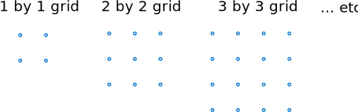
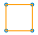
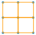
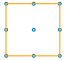
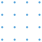
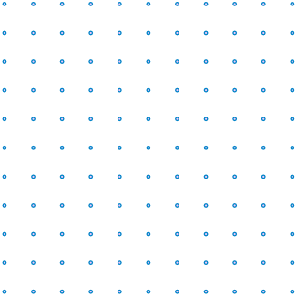
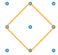
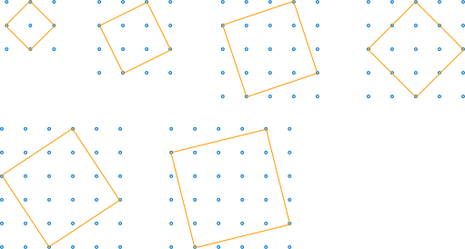

Activity: Drawing Squares
For this activity all you need is a grid of dots, a pencil and your brain.
Let us discover how many squares you can make on different grids:

Note: "1 by 1" means how many sides (not how many dots).
So, let's try drawing in
some squares and count how many:
1 by 1
| Well, that's easy, there's just one: |  |
2 by 2
| That seems to be easy too. There are four of them, aren't there? |  | |
| But
wait, that's not the complete answer. There's also this bigger one: |
 |
That makes five squares altogether - four 1 by 1 squares and one 2 by 2 square
Your Turn !
3 by 3
|
Over to you now. Here's the grid: |
 |
Hint: For the 3 by 3 case, you will expect to get 1 by 1 squares, 2 by 2 squares and 3 by 3 squares. How many of each?

Now you can start to fill in a table:
| How Many 1 by 1 squares |
How Many 2 by 2 squares |
How Many 3 by 3 squares |
How Many 4 by 4 squares |
How Many 5 by 5 squares |
Total | |
| 1 by 1 Grid: | 1 | 1 | ||||
| 2 by 2 Grid: | 4 | 1 | 5 | |||
| 3 by 3 Grid: | ||||||
| 4 by 4 Grid: | ||||||
| 5 by 5 Grid: |
Did you notice anything about the numbers in the table?
They are all square numbers:
- 12 = 1,
- 22 = 4,
- 32 = 9,
- etc ...
and the totals are found by adding together square numbers.
Formula to The Rescue ... !
There is actually a formula for adding the first n square numbers:
Sn = n(n+1)(2n+1) / 6
Example: The number of squares in the 5 by 5 case
Try substituting n = 5 into the formula:
So, we seem to have solved the question. Yipee!
But wait ... there's more!
I said you would need to use your brains. Let's go back to the 2 by 2 case:
2 by 2
There is another square too, this one:

Why is it a square? It has four equal sides and four right angles, so that's a square.
So, that makes six squares altogether.
Four 1 by 1 squares, one 2 by 2 square and one x by x square.
What is the value of x? We can use Pythagoras' Theorem to find it:
So, we have four 1 by 1 squares, one 2 by 2 square and one √2 by √2 square.
Your Turn !
3 by 3
- Are there any more squares?
YES! Can you find them?
4 by 4 and 5 by 5
Also try the 4 by 4 grid, and the 5 by 5 grid
As you proceed, you will find squares like these:

What are the lengths of the sides of these squares?
You can use Pythagoras' Theorem to work that out yourself
In each case, how many do you get of each one?
Here is a table to help you:
| How Many 1 by 1 |
How Many 2 by 2 |
How Many 3 by 3 |
How Many 4 by 4 |
How Many 5 by 5 |
How Many √2 by √2 |
How Many √5 by √5 |
How Many √8 by √8 |
How Many √10 by √10 |
How Many √13 by √13 |
How Many √17 by √17 |
Total | |
| 1 by 1 Grid: | 1 | 1 | ||||||||||
| 2 by 2 Grid: | 4 | 1 | 1 | 6 | ||||||||
| 3 by 3 Grid: | ||||||||||||
| 4 by 4 Grid: | ||||||||||||
| 5 by 5 Grid: |
Advanced
Can you find a formula to calculate the number of squares that have lengths that are square roots?
Can you then find a formula for the total number of squares in each case?
Are there any more squares lurking in there that we've missed?
Conclusion
What started off as seeming to be a simple exercise turned out to be quite complex. You really do need to use your brains to think this one through, but it's a challenging and rewarding exercise.